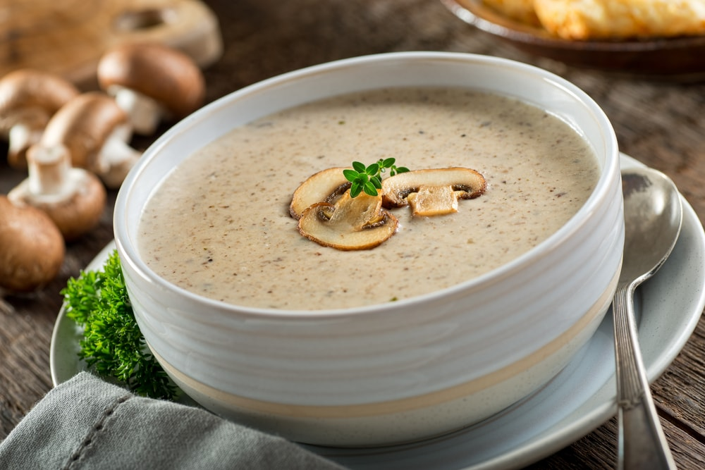

-
PalóclevesHozzávalók:
- 50 dkg sertéscomb
- 1 fej vöröshagyma
- 2 gerezd fokhagyma
- 30 dkgvzöldbab
- 2 db burgonya
- 1 csok petrezselyem
- kapor
- 3 ek olaj
- só
- bors
- 1 mk kömény
- 1 db babérlevél
- 2 dl tejfül
- 1 ek liszt
Elkészítési idő:60 percAdag:4Elkészítés:A sertéshúst megmossuk, konyhai papírtörlővel szárazra töröljük, és kockára vágjuk. A hagymát és a fokhagymát megtisztítjuk, és apróra vágjuk. A zöldbabot megtisztítjuk, 2-3 cm-es darabokra felaprítjuk és megmossuk. A burgonyát megtisztítjuk, megmossuk és felkockázzuk. A petrezselymet és a kaprot megmossuk és felaprítjuk.
Az olajat a fazékban felforrósítjuk, beletesszük a hagymát, és üvegesre pároljuk. Hozzátesszük a kockára vágott húst, és egy rövid ideig pirítjuk. Megszórjuk pirospaprikával, hozzáadjuk a fokhagymát, megsózzuk, borsozzuk, meghintjük az őrölt köménnyel, beletesszük a babérlevelet, felöntjük kb. 1 dl liter vízzel, és lefedve félpuhára főzzük 20 perc alatt. Ha kell, pótoljuk az elpárolgott folyadékot.
A félig megpuhult húshoz hozzáadjuk a burgonyát és a zöldbabot, majd felengedjük 1 l vízzel és 10 percig főzzük. A tejfölt simára keverjük a liszttel, hozzáadunk 1 dl vizet, ezzel behabarjuk a levest, és kb. 5 percig forraljuk. Petrezselyemmel és kaporral megszórva, forrón tálaljuk a palóclevest.
-
Gulyásleves házi csipetkévelHozzávalók:
- 50 dkg sertéslapocka
- 50 dkg vegyes zöldség
- 50 dkg burgonya
- 1 fej vöröshagyma
- 1 tk fűszerkömény
- 1 db hegyes paprika/li>
- 1 db paradicsom
- 1 tk paprikakrém
- só
- bors
- olaj vagy zsír
- édesnemes őrölt paprika
- 2 gerezd fokhagyma
- A csipetkéhez:
- 1 db tojás
- 2 ek liszt
Elkészítési idő:60 percAdag:4Elkészítés:A húst, a burgonyát egyforma kockára, a zöldségféléket karikára vágjuk. A felmelegített zsiradékon megdinszteljük a megtisztított, apró darabokra vágott hagymát, a köményt, majd a húst. Fedő alatt, 15-20 percig pároljuk, majd megszórjuk a pirospaprikával, összekeverjük, majd felöntjük annyi vízzel, hogy kb. 2-3 ujjnyira ellepje. Sózzuk, borsozzuk, alacsony hőmérsékleten, gyenge forrás mellett főzzük.
Amikor a marhahús félpuhára főtt, be zöldségeljük, azaz hozzáadjuk a burgonyát, a répát, fűszerezzük, felöntjük a szükséges mennyiségű vízzel, hogy jól ellepje, és készre főzzük.
Közben a csipetkéhez a tojást a liszttel elkeverjük és fél órát állni hagyjuk. Amikor a leves elkészült, belecsipkedjük a kemény gyúrt tésztából a borsónyi darabokat a forrásban lévő levesbe. Amikor a leves színére feljön, tálalhatjuk.
-
Karfiolos zöldséglevesHozzávalók:
- 1 fej vöröshagyma
- 1 db nagyobb burgonya
- 1 db sárgarépa
- 25 dkg karfiol
- 2 ek vaj
- 1 l zölségleves-alaplé
- 10 dkg fagyasztott borsó
- só
- fél csok petrezselyem
Elkészítési idő:45 percAdag:4Elkészítés:A hagymát, a burgonyát és a sárgarépát meghámozzuk, a hagymát finomra, a burgonyát és a répát falatnyi darabokra vágjuk. A karfiolt megmossuk, kisebb rózsákra bontjuk.
Egy lábasban felforrósítjuk a vajat, megfonnyassztjuk rajta a hagymát. Hozzáadjuk a burgonyát és a répát, kissé megpirítjuk. Felöntjük az alaplével, és felforraljuk. Hozzáadjuk a karfiolt, és félpuhára főzzük.
Végül a leveshez adjuk a borsót is, felforraljuk, enyhén sózzuk, és az egészet puhára főzzük. A leöblített, finomra vágott petrezselyemmel díszítve tálaljuk.
-
Fűszeres körtelevesHozzávalók:
- 4 db körte
- 0.5 l víz
- 10 dkg barna cukor
- 1 mk őrölt fahéj
- 1 mk őrölt szegfűszeg
- 1 mk őrölt koriander
- 1 gerezd fokhagyma
- 1 mk őrölt zöld kardamom
- 2 dl tej
- 0.5 csomag vaníliás pudingpor
- fél citrom
Elkészítési idő:30 percAdag:2Elkészítés:A körtét megtisztítjuk, meghámozzuk, felkockázzuk, majd a vízzel, a cukorral és a fűszerekkel összekeverjük, felforraljuk. Ha felforrt, lassú tűzön főzzük, amíg megpuhul a körte (körtétől függően kb. 15-20 percig).
Ha megpuhult a körte, összekeverjük a tejet a pudingporral és a citromhéjjal. Felöntjük vele a levest és újraforraljuk, amíg besűrűsödik.
-
Gombakrémleves egyszerűenHozzávalók:
- 1 kg gomba
- 1 fej vöröshagyma
- 2 dl tejszín
- só
- olaj
- bors
Elkészítési idő:30 percAdag:4Elkészítés:Megtisztítjuk a gombákat. Kb. 10-15 egyforma fejet félreteszünk, a többit felszeleteljük. A vöröshagymát felaprítjuk, és az olajon megdinszteljük. Hozzáadjuk a gombát, és egy kicsit megpirítjuk, majd felengedjük 1 liter vízzel. Megsózzuk, megborsozzuk, és 10 percig főzzük.
Közben a félretett gombafejeket felszeleteljük, és a vajon barnára pirítjuk. Sózzuk, borsozzuk.
A gombalevest botmixerrel összeturmixoljuk, hozzáadjuk a tejszínt, és újra felforraljuk, majd belekeverjük a pirított gombákat.